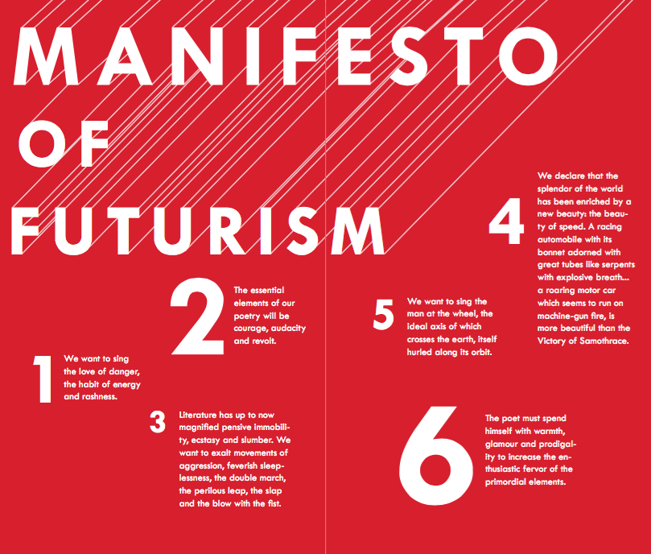

2015 | Adobe InDesign CC
A class project for ART 184: Digital Book Making and Design. I sought to capture the violent, bold and sense-provoking style of the futurist era in a graphic booklet of Marinetti's The Futurist Manifesto.